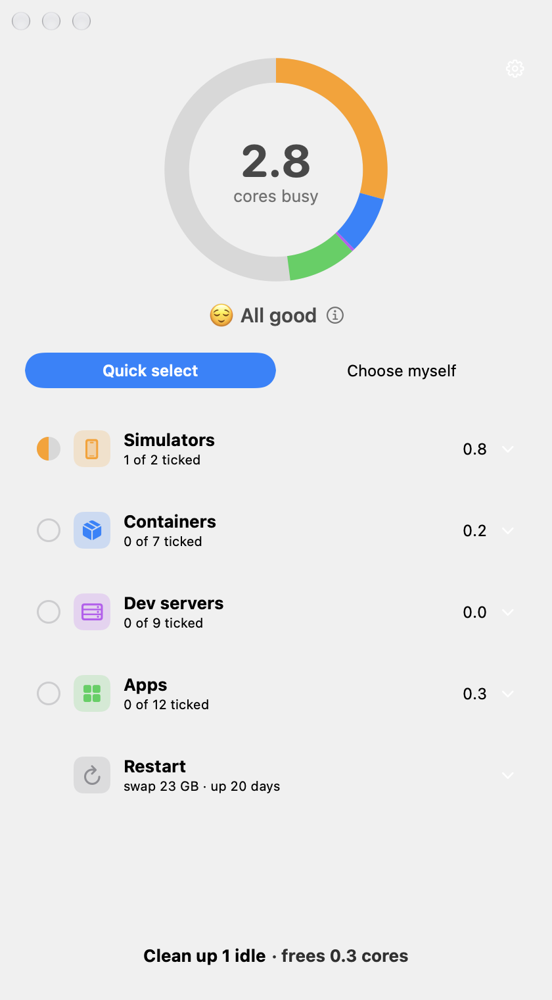
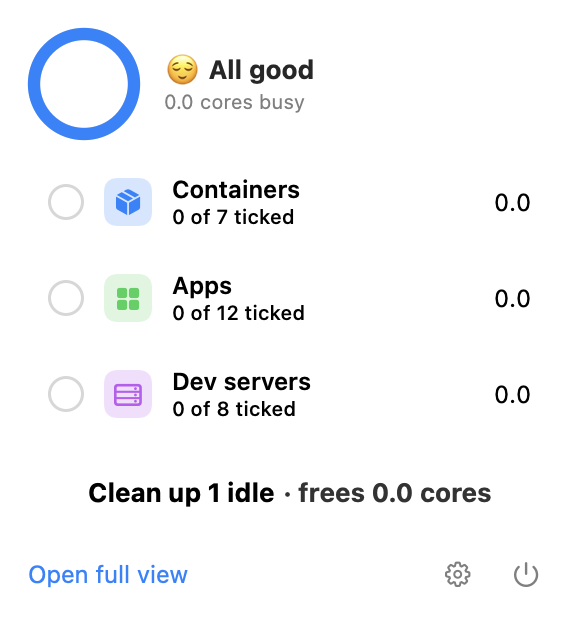
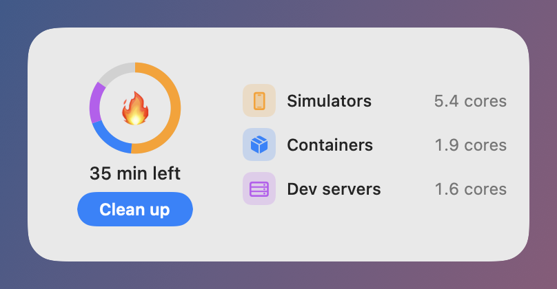

CleanUp finds the idle simulators, containers and dev servers burning your CPU, and the merged worktrees your coding agents left behind. It cleans up only what is safe, in one tap.



Each colour is one cause. Tap Quick select to stop everything idle, or tick items yourself.
Anything uncertain counts as in use. Every item has a ? that says why CleanUp judged it.
No network access, no analytics, no account. Menu bar, window and widget.
Codex, Claude Code, Cursor and other agents make a git worktree for each task and rarely remove it. On one Mac that came to 138 worktrees and 247 GB, and 208 GB of it was work that had already been merged.
CleanUp finds them, marks a worktree safe only when its work is merged and nothing is uncommitted or in use, and moves them to the Trash in one tap. Branches are always kept.
On a developer's Mac the usual cause is tools left running in the background: a booted iOS Simulator, Docker Desktop's virtual machine, or a dev server started days ago. Each one keeps the CPU busy even when you aren't using it. Activity Monitor lists processes, but it doesn't tell you which ones are idle. CleanUp groups CPU use by cause, shows how much battery time you have left, and marks what is safe to stop.
macOS shows apps using significant energy in the battery menu and in Activity Monitor's Energy tab. CleanUp adds the part those don't: a ring split by cause (simulators, containers, dev servers, apps) with the cores each one keeps busy, and a checklist of the items that look idle. It lives in the menu bar and has a desktop widget.
Yes. A simulator stays booted after you stop your app in Xcode, and its background processes keep using CPU. CleanUp marks a simulator idle only when it has been booted for over an hour, no app was opened in it in the last hour, it hasn't been in front for 30 minutes, it uses under 5% CPU, and no debugger, build or test runner is using it.
Docker Desktop runs a Linux virtual machine that keeps going until you quit the engine. CleanUp marks a container idle only after it has been up over 6 hours with almost no CPU, network traffic or connections, and no shell attached. It quits the engine itself only after 10 minutes with no container in use and no docker or kubectl command running. Tested with Docker Desktop; OrbStack and Colima are supported but untested.
Coding agents create a git worktree per task, each with its own dependencies and build output, and many are never removed. CleanUp finds every linked worktree of your repositories, checks that its work is merged into the default branch (squash and rebase merges included), that nothing is uncommitted or untracked, and that no process is using it. Safe ones go to the Trash in one tap, with Undo, and branches are never deleted.
No. Every check must pass before something counts as idle, and anything uncertain counts as in use. Apps are never pre-ticked and are asked to quit normally, so they can still offer to save. Browser tabs are read-only. Nothing is stopped automatically: CleanUp only warns, and you press the button.
Yes. CleanUp is free and open source under the MIT license, with no ads, no account, no analytics and no network access. Everything is read and decided on your Mac.
CleanUp needs macOS 26 or later, on Apple Silicon or Intel. This preview isn't notarized by Apple yet, so the first time you open it, click Done, then go to System Settings → Privacy & Security and click Open Anyway. You only do this once. A signed download is the first sponsorship goal.
CleanUp has no ads, accounts or tracking. The first sponsorship goal is $10 a month: it pays Apple's developer fee, so CleanUp can ship as a signed download that opens in one click.